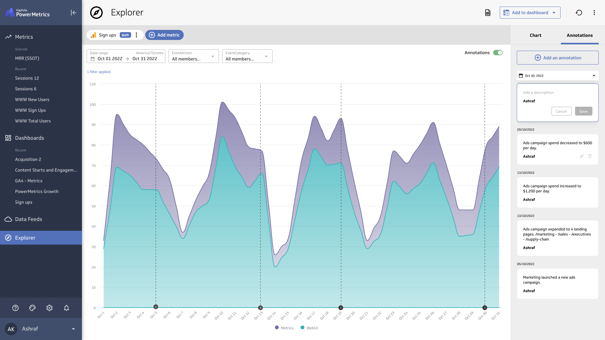

Annotations
Role
Project Lead
UI/UX Design
Team members
Nick Venne Developer
Introduction
Users are looking for a way share and compilea list of key decisions and changes that could have an impact on their business. Annotations are introduced as a way to connect the charts with those important moments.

Opportunity
TBD
Simple solution for signficant decisions
Turn annotations to get a view of your key decisions on different types of charts.

Annotations sidebar for more details on your annotations.

Easily create new annotations.
Intuitive date picker to choose where your annotations falls.

Final prototype
TBD
Success Metrics
After looking at the data, and evaluating the current user experience, we came to the following conclusions:
An increase in both adding users and assets sharing
An increase in number of users per account
An increase in conversion due to reaching users limits